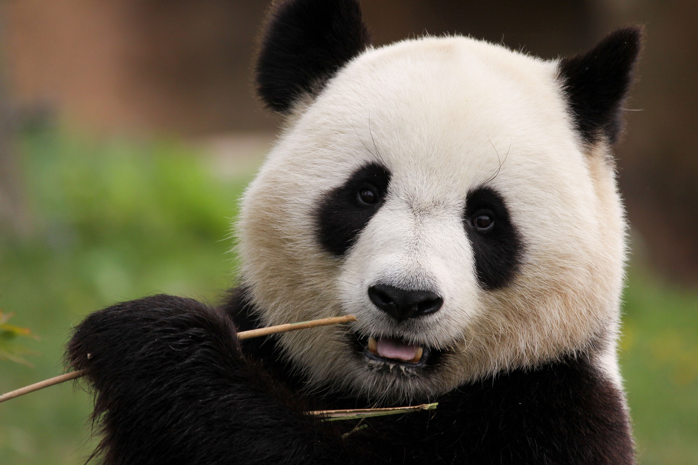

<!DOCTYPE html>
<html lang="de">
    <head>
        <meta charset="utf-8">
        <title>Paul der Panda</title>
    </head>
    <body>
    </body>
</html>

<header> Pauls Website</header>

<h3>Menü</h3>

<ul>
    <li><a href="html/fähigkeiten.html">Fähigkeiten</a></li>
    <li><a href="html/video.html">Videos</a></li>
    <li><a href="html/Bilder.html">Bilder</a></li>
</ul>

<br>

<h1>Hallo Welt!</h1>

<h2>Mein Name ist Paul der Panda. Ich bin ein <del>Panda</del> Pandabär</h2>

<p> 
Paul der Panda war ein besonderer Bewohner des örtlichen Zoos. Mit seinem dicken, schwarzen Fell und den markanten schwarzen Augen zog er die Aufmerksamkeit der Besucher auf sich. Paul war ein echtes Charaktertier – neugierig, verspielt und immer für eine Überraschung gut. Schon als kleiner Panda zeigte Paul eine große Vorliebe für Bambus. Wenn er nicht gerade faulenzend in seinem Gehege lag, war er damit beschäftigt, die frischesten und saftigsten Bambusstängel zu finden und genüsslich zu verspeisen. Seine geschickten Pfoten machten ihn zu einem Meister im Umgang mit diesem grünen Leckerbissen. Doch <a href="https://de.wikipedia.org/wiki/Paul">Paul</a> war nicht nur ein Feinschmecker, sondern auch ein echter Entdecker. Immer wieder überraschte er die Zooangestellten mit seinen kreativen Spielideen. Ob er nun auf einem Baumstamm balancierte, durch Reifen sprang oder sich im Wasser planschte – Paul sorgte stets für Unterhaltung und brachte die Besucher zum Staunen. 
</p>
    
<br>
    
<br>

<p>
Aber auch abseits seines Spieltriebs hatte Paul eine besondere Art, die Herzen der Menschen zu erobern. Sein sanftes Wesen und sein freundlicher Blick machten ihn zu einem Liebling unter den Zoobesuchern. Kinder drückten sich am Gitter seines Geheges die Nasen platt, um einen Blick auf ihn zu erhaschen, und Erwachsene konnten nicht anders, als über seine niedlichen Streiche zu schmunzeln. Paul der Panda war mehr als nur ein Tier im Zoo – er war eine echte Persönlichkeit, die es verstand, die Menschen zu begeistern und zu verzaubern. Mit seinem liebenswerten Wesen und seinem unverwechselbaren Charme hinterließ er einen bleibenden Eindruck bei allen, die das Glück hatten, ihm zu begegnen. 
</p>

<hr>
<i>Pandas sind bekannt für ihre gemütliche Art und ihre Vorliebe für Bambus.</i>
<hr>

<br>

<h2>Bambus</h2>

<p>
Bambus ist nicht nur das Hauptnahrungsmittel von Pandas, sondern auch eine erstaunliche Pflanze mit vielfältigen Verwendungen. Als eine der am schnellsten wachsenden Pflanzen der Welt kann Bambus innerhalb weniger Wochen zu beeindruckenden Höhen heranwachsen. Seine Robustheit und Vielseitigkeit machen ihn zu einem wichtigen Rohstoff für eine Vielzahl von Produkten, von Möbeln über Kleidung bis hin zu Baustoffen. Darüber hinaus spielt Bambus eine entscheidende Rolle im Ökosystem, indem er Erosion verhindert, den Boden stabilisiert und Lebensraum für eine Vielzahl von Tierarten bietet. 
</p>
